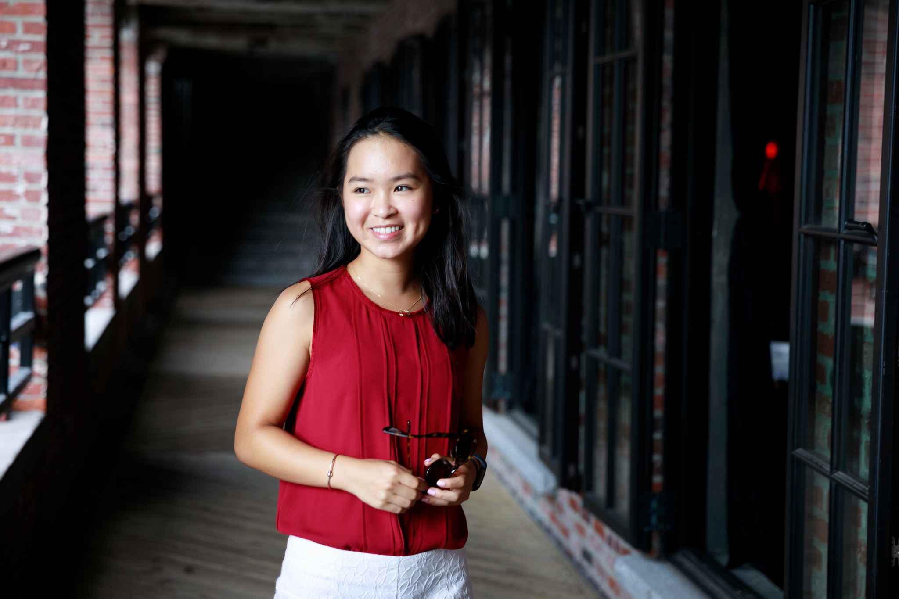

About Me
 My name is Ava Long. I grew up in Massachusetts and currently I attend boarding school in New England. Traveling is one my favorite things to do with my family. I grew up as an only child (unless you count the two cats as kids as my mom does) so traveling has truly been my family's favorite way to get together during the busy year. Between the school, the work, and the trips, I enjoy playing tennis, running, reading business/self help books, and blogging.